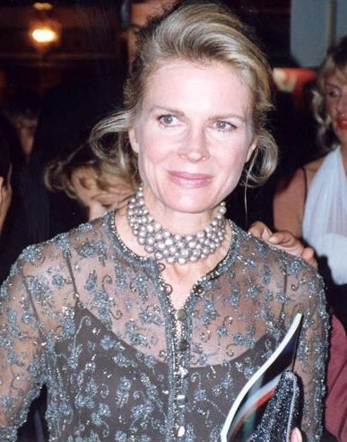
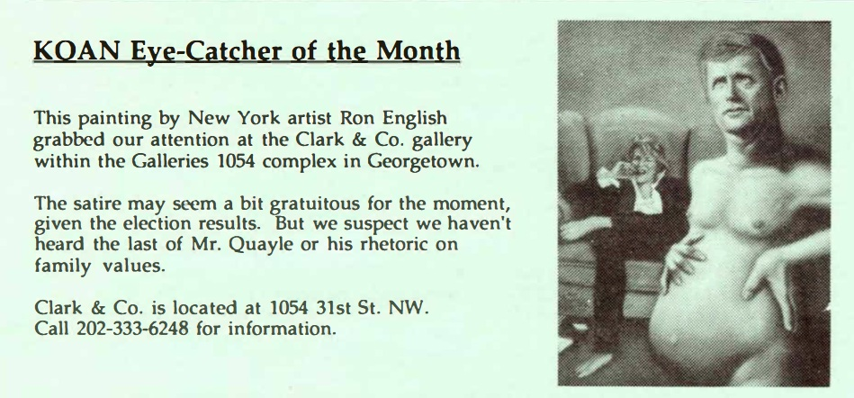

Literature
Ron English, Popaganda: The Art & Subversion of Ron English (San Francisco: Last Gasp, 2001), p. 80. ISBN 1-887128-60-3.
Notes
This work appears in KOAN: Ken Oda’s Art Newsletter, vol. 1, no. 4, December 1992, p. 9, as the “KOAN Eye-Catcher of the Month.”
In Popaganda, this work was erroneously reported as 24 × 36 inches.
This work references Candice Bergen and Dan Quayle.

Ancillary Documentation
